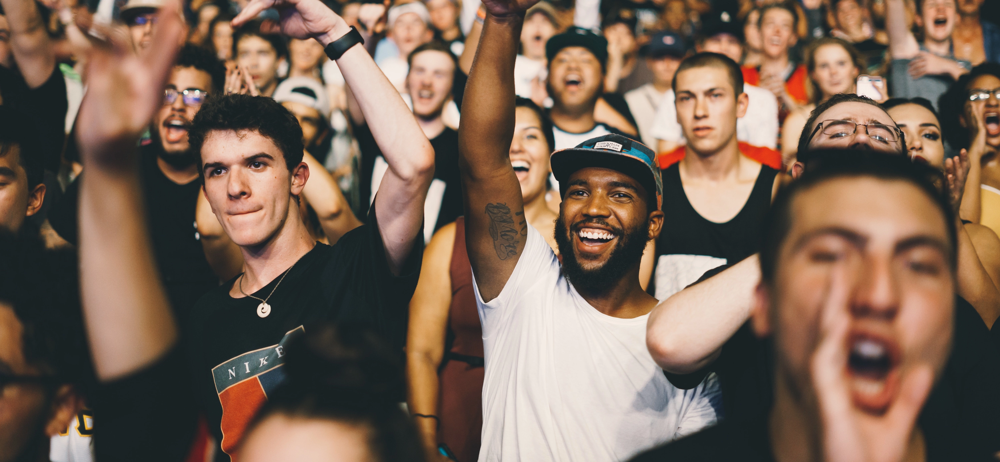
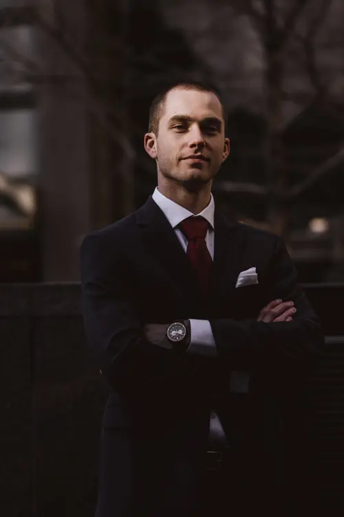
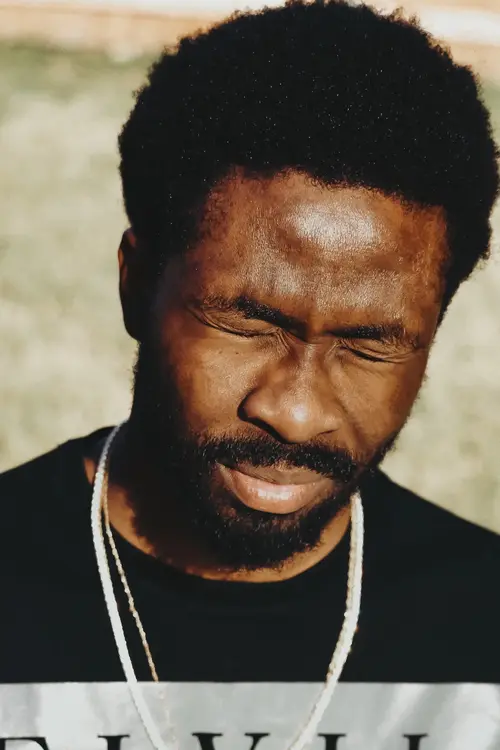
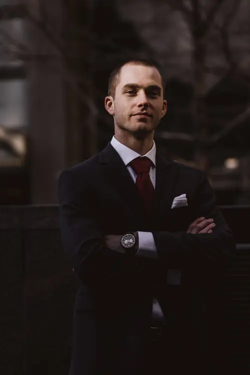
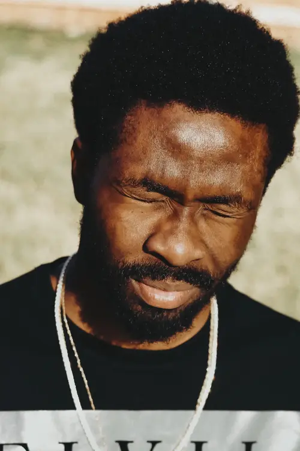

Nous passons notre vie à chercher le bonheur, et lorsqu’il se présente, nous voulons le figer à travers des images qui traversent le temps. En tant que photographe portrait, photographe mariage et photographe d'entreprise à Bordeaux et en Nouvelle-Aquitaine, je vous accompagne pour immortaliser ces instants précieux.
Mon approche mêle technique, douceur et spontanéité afin de créer des photographies authentiques, lumineuses et pleines d’émotion. Que ce soit pour un reportage de mariage, une séance portrait ou une prestation professionnelle, je mets tout mon savoir-faire pour raconter votre histoire de la plus belle façon.
Un portrait n’est pas une ressemblance. Dès lors qu’une émotion ou qu’un fait est traduit en photo, il cesse d’être un fait pour devenir une opinion. L’inexactitude n’existe pas en photographie. Toutes les photos sont exactes. Aucune d’elles n’est la vérité.
Séance photo personnalisée pour capturer vos plus beaux moments. Portraits, photos de couple, famille ou projets artistiques : je réalise vos shootings en Île-de-France et à Bordeaux avec un style naturel et lumineux.
Retouches professionnelles pour sublimer vos photos. Idéal pour vos portraits, photos de mariage ou vos images d’entreprise. Chaque retouche est réalisée avec précision pour un rendu naturel et harmonieux.
Donnez vie à vos souvenirs grâce à un album photo sur mesure. Parfait pour conserver un reportage de mariage, un shooting portrait ou vos plus belles images professionnelles. Mise en page élégante et impression de haute qualité.
De manière inconsciente, je crois, je guette un regard, une expression, des traits ou une nostalgie capable de résumer ou plus exactement de révéler une vie
N’hésitez pas à m’écrire ! Je vous répondrais en moins de 24 heures
📍 68 avenue Alsace-Lorraine, 33200 Bordeaux
Voir l’emplacement sur Google Maps
 


